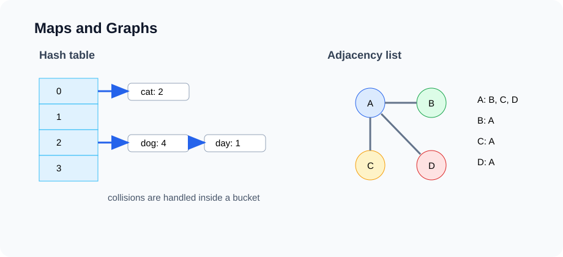

Lesson 11
Union-Find and Graph Modeling
Graphs model relationships. Union-Find answers connectivity questions when edges are added over time. This lesson teaches both the data structure and the modeling skill needed before graph algorithms make sense.

Example first: connected friend groups
Suppose students join clubs. Each pair (a, b) means student a and student b are connected through
a shared club. After many pairs, we want to answer:
- Are student 2 and student 9 in the same connected group?
- How many separate groups are there?
- Does adding this connection create a cycle?
We do not need the exact path between students. We only need component membership. That is exactly what Union-Find is built for.
Disjoint set ADT
Union-Find is also called Disjoint Set Union, or DSU. It maintains a partition of items into non-overlapping sets.
interface DisjointSet {
int find(int x);
boolean connected(int a, int b);
boolean union(int a, int b);
int componentCount();
}| Operation | Meaning |
|---|---|
find(x) | Return the representative/root of x's component |
connected(a, b) | Return whether a and b have the same representative |
union(a, b) | Merge the two components if different |
Quick-find idea
The simplest version stores a component id for every item.
id[x] = component id of x
Then connected(a, b) is O(1), but union(a, b) may need to scan the whole array and
change many ids. That makes union O(n).
Quick-union idea
Quick-union stores parent pointers. Each component is a tree. The root is the representative.
parent[x] = parent of x
if parent[x] == x, x is a rootTo find the root, follow parent pointers.
int find(int x) {
while (parent[x] != x) {
x = parent[x];
}
return x;
}Plain quick-union can become tall, like an unbalanced tree. We need two optimizations.
Optimization 1: union by size
When merging two components, attach the smaller tree under the larger tree. This keeps trees shorter.
if (size[rootA] < size[rootB]) {
parent[rootA] = rootB;
size[rootB] += size[rootA];
} else {
parent[rootB] = rootA;
size[rootA] += size[rootB];
}Optimization 2: path compression
During find, make every visited node point directly to the root. Future finds become faster.
int find(int x) {
if (parent[x] != x) {
parent[x] = find(parent[x]);
}
return parent[x];
}
Union by size plus path compression gives almost constant amortized time. More precisely, operations are
O(α(n)) amortized, where α is the inverse Ackermann function, which grows so slowly
that it is effectively constant for any realistic input size.
Full DSU implementation
class DSU implements DisjointSet {
private final int[] parent;
private final int[] size;
private int components;
DSU(int n) {
parent = new int[n];
size = new int[n];
components = n;
for (int i = 0; i < n; i++) {
parent[i] = i;
size[i] = 1;
}
}
public int find(int x) {
if (parent[x] != x) {
parent[x] = find(parent[x]);
}
return parent[x];
}
public boolean connected(int a, int b) {
return find(a) == find(b);
}
public boolean union(int a, int b) {
int rootA = find(a);
int rootB = find(b);
if (rootA == rootB) return false;
if (size[rootA] < size[rootB]) {
parent[rootA] = rootB;
size[rootB] += size[rootA];
} else {
parent[rootB] = rootA;
size[rootA] += size[rootB];
}
components--;
return true;
}
public int componentCount() {
return components;
}
}Application 1: number of connected components
Given n nodes and undirected edges, count connected components.
static int countComponents(int n, int[][] edges) {
DSU dsu = new DSU(n);
for (int[] edge : edges) {
dsu.union(edge[0], edge[1]);
}
return dsu.componentCount();
}
If there are m edges, runtime is O((n + m) α(n)), effectively linear.
Application 2: cycle detection in an undirected graph
When processing an undirected edge (u, v), if u and v are already connected, then adding the edge
creates a cycle.
static boolean hasCycleUndirected(int n, int[][] edges) {
DSU dsu = new DSU(n);
for (int[] edge : edges) {
if (!dsu.union(edge[0], edge[1])) {
return true;
}
}
return false;
}Application 3: accounts merge
If two accounts share an email address, they likely belong to the same person. Union-Find can group account indices that share emails.
Map<String, Integer> owner = new HashMap<>();
DSU dsu = new DSU(accounts.size());
for (int i = 0; i < accounts.size(); i++) {
for (String email : accounts.get(i).emails()) {
if (owner.containsKey(email)) {
dsu.union(i, owner.get(email));
} else {
owner.put(email, i);
}
}
}This combines hashing and Union-Find: the map finds previous owners of an email, and DSU merges account groups.
Graph vocabulary
A graph is a set of vertices connected by edges.
| Term | Meaning |
|---|---|
| Vertex / node | An object in the graph |
| Edge | A relationship between two vertices |
| Directed edge | One-way relationship: u -> v |
| Undirected edge | Two-way relationship: u -- v |
| Weighted edge | Edge with a cost, distance, or strength |
| Path | Sequence of edges connecting vertices |
| Cycle | Path that returns to a previous vertex |
| Connected component | Maximal group where vertices can reach each other |
Graph modeling questions
Before choosing an algorithm, model the problem.
GRAPH-MODELING-CHECKLIST:
1. What are the vertices?
2. What are the edges?
3. Are edges directed or undirected?
4. Are edges weighted or unweighted?
5. What question are we asking: connectivity, path, shortest path, cycle, ordering?
6. What are V and E?Many graph mistakes happen before coding. The wrong model leads to the wrong algorithm.
Adjacency matrix
An adjacency matrix uses a 2D array. matrix[u][v] tells whether edge u -> v exists.
boolean[][] graph = new boolean[n][n];
graph[u][v] = true;
graph[v][u] = true; // for undirected graph| Operation | Cost |
|---|---|
| Check whether edge u-v exists | O(1) |
| List all neighbors of u | O(V) |
| Space | O(V^2) |
Matrices are useful for dense graphs or when edge existence checks are frequent.
Adjacency list
An adjacency list stores neighbors for each vertex. This is usually better for sparse graphs.
List<List<Integer>> graph = new ArrayList<>();
for (int i = 0; i < n; i++) {
graph.add(new ArrayList<>());
}
graph.get(u).add(v);
graph.get(v).add(u); // undirected| Operation | Cost |
|---|---|
| List all neighbors of u | O(degree(u)) |
| Check whether edge u-v exists | O(degree(u)) unless using a set |
| Space | O(V + E) |
Graph interface
Algorithms should ask for neighbors. They should not care whether the graph is stored with lists, sets, or a matrix.
interface Graph {
int vertexCount();
void addEdge(int from, int to);
Iterable<Integer> neighbors(int v);
}class AdjListGraph implements Graph {
private final List<List<Integer>> adj;
AdjListGraph(int n) {
adj = new ArrayList<>();
for (int i = 0; i < n; i++) {
adj.add(new ArrayList<>());
}
}
public int vertexCount() {
return adj.size();
}
public void addEdge(int from, int to) {
adj.get(from).add(to);
}
public Iterable<Integer> neighbors(int v) {
return adj.get(v);
}
}Weighted graph representation
For weighted graphs, store edge objects.
record Edge(int to, int weight) { }
List<List<Edge>> graph = new ArrayList<>();
for (int i = 0; i < n; i++) graph.add(new ArrayList<>());
graph.get(u).add(new Edge(v, weight));Weights might represent distance, time, cost, similarity, capacity, or risk.
Union-Find vs graph traversal
| Question | Better tool | Why |
|---|---|---|
| Are u and v connected after many added edges? | Union-Find | Fast component queries |
| How many components after processing edges? | Union-Find | Components are the main state |
| What is the actual path from u to v? | BFS/DFS | Union-Find does not store paths |
| What is the shortest path? | BFS/Dijkstra | Need distances, not just components |
| Can we topologically order tasks? | Graph algorithm | Direction and dependencies matter |
Common mistakes
- Using Union-Find when the problem asks for an actual path.
- Forgetting to add both directions for an undirected adjacency list.
- Using an adjacency matrix for a huge sparse graph.
- Confusing number of vertices V with number of edges E.
- Calling a directed graph connected without defining reachability carefully.
- Forgetting that weighted graphs need edge objects, not just neighbor integers.
Analysis routine
ANALYZE-GRAPH-MODEL(problem):
1. Define vertices and edges.
2. Decide directed vs undirected.
3. Decide weighted vs unweighted.
4. Choose adjacency list or matrix.
5. Identify whether the question is connectivity, path, shortest path, cycle, or ordering.
6. If connectivity only, consider Union-Find.
7. State complexity using V and E.In-class exercises
- Trace DSU parent arrays after a sequence of unions.
- Implement
connectedandunionwith path compression. - Count connected components from an edge list.
- Detect a cycle in an undirected graph using Union-Find.
- Model a class prerequisite graph: what are vertices and edges?
- Build adjacency list and adjacency matrix for the same graph.
- Represent a weighted road network using
Edgerecords.
Homework: GitHub submission
Create a folder named lesson-11-union-find-graphs in the course homework repository.
lesson-11-union-find-graphs/
README.md
src/
DisjointSet.java
DSU.java
Graph.java
AdjListGraph.java
GraphModelingProblems.java
Main.java
analysis/
graph-modeling-analysis.mdRequired implementation
- Implement
DSUwith path compression and union by size. - Implement
countComponents. - Implement
hasCycleUndirected. - Implement
AdjListGraph. - Implement a weighted adjacency list using an
Edgerecord. - Write a short modeling explanation for three real-world graph examples.
README requirements
- Explain
find,union, path compression, and union by size. - Explain adjacency list vs adjacency matrix.
- For each graph example, define vertices, edges, direction, weights, V, and E.
- State time and space complexity for DSU operations and graph representations.
- Include at least two tests for every required method.
Optional challenge
Implement Kruskal's minimum spanning tree algorithm using your DSU. Sort edges by weight, then union endpoints when they are not already connected.